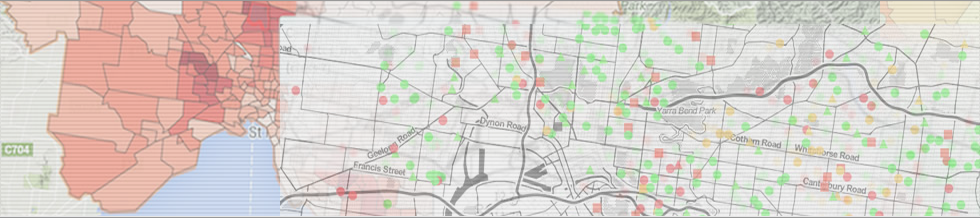
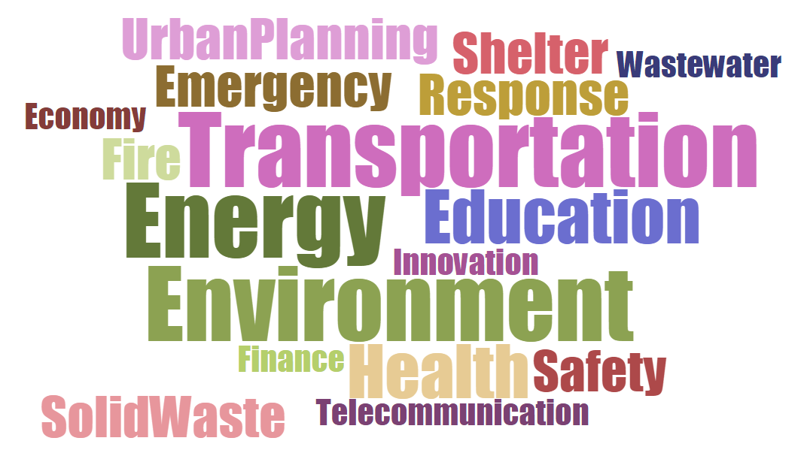

Urban Analytics Infrastructure
Portal
A Digital Infrastructure for exploring urban quality of life indicators
Sitemap
|
Login

HOME
ABOUT UADI
BROWSE INDICATORS
RESEARCH TEAM
PARTNERS
LINKS
INDICATOR SEARCH RESULTS
Tag Cloud

Follow us on Twitter
Follow us on Facebook
PROJECT PARTNERS